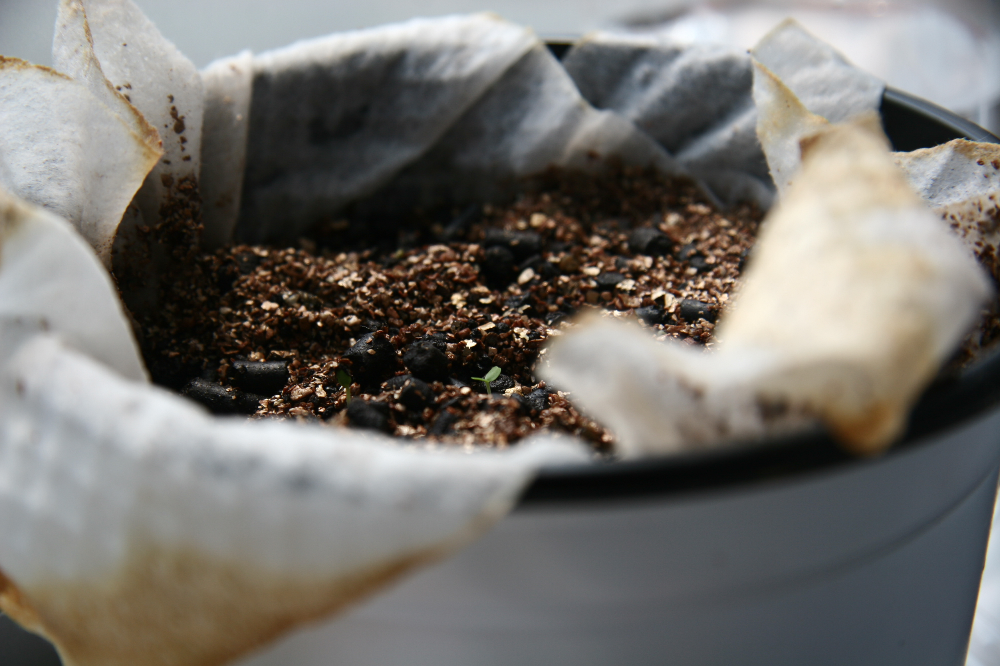

レモンバーム 特徴 葉はレモンに似たさわやかな香りで、この葉からつくったハーブティーは最高の風味といわれています。 種まき～収穫 種は好光性種子(注1)。1鉢1苗で育てます、適温であれば、10～14日程度で発芽します。日当たりを好みますが、日が当たりすぎると葉が痛む性質があるので、半日日陰となる場所が最適です。葉はいつでも摘みとれますが、初夏の開花始めのころが最も香りがあります。 (注1)好光性種子 小学校の理科で、発芽には「水分」「空気」「温度」が必要と学習しました。多くの種はこれら3要素があれば発芽しますが、発芽するとき光があった方がより発芽が促進される種子があります。これを好光性種子と呼びます。イチゴ、レタス類、ニンジン、春菊などがこれに該当します。好光性種子には光が当たると作られる物質があり、この物質が発芽を促すと考えられています。これらの種を植える時は、種まき後土をかぶせないか浅くかぶせるようにします。 「ボウル菜園 説明書 ワークシート」より引用 |
目標・課題 栽培目標 できるだけ大きいものを多く育てたい。そのために、養分をしっかり与え光にもしっかりと当てて育てたい。 商品価値 お茶としての利用を考えているので、形などよりも量などを多くできるように意識したい。 栽培環境 東・南から日光が当たる窓辺に置き、エアコンを使い温度調節をできるようにする。 工夫・その他 部屋の温度がすぐ上がってしまうので、温度調節は、しっかりしたい。また、日の当たりすぎにも注意して、場所を移動するなどしたい。 |
||
1日目 |
 5日目 |
10日目 |
 15日目 |
20日目 |
25日目 |
 振り返り |
ウェブページの作成 |